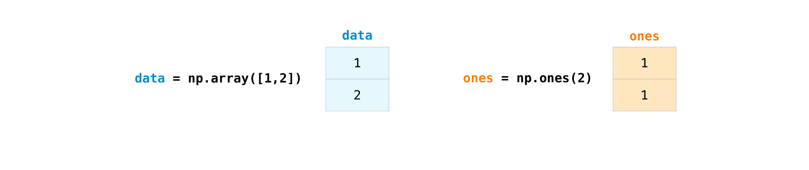
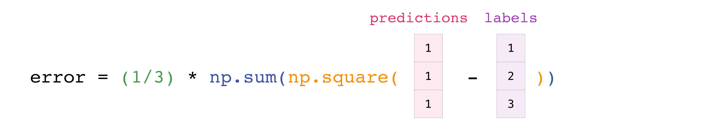

NumPy: the basics for members of the Walt Lab¶
Shamelessly abridged from the NumPy documentation by Tyler Dougan.
Welcome to NumPy!¶
NumPy (Numerical Python) is an open source Python library that’s used in almost every field of science and engineering. It’s the universal standard for working with numerical data in Python, and it’s at the core of the scientific Python and PyData ecosystems. NumPy users include everyone from beginning coders to experienced researchers doing state-of-the-art scientific and industrial research and development. The NumPy API is used extensively in Pandas, SciPy, Matplotlib, scikit-learn, scikit-image and most other data science and scientific Python packages.
The NumPy library contains multidimensional array and matrix data structures (you’ll find more information about this in later sections). It provides ndarray, a homogeneous n-dimensional array object, with methods to efficiently operate on it. NumPy can be used to perform a wide variety of mathematical operations on arrays. It adds powerful data structures to Python that guarantee efficient calculations with arrays and matrices and it supplies an enormous library of high-level mathematical functions that operate on these arrays and matrices.
Learn more about NumPy here!
Installing NumPy¶
To install NumPy, we strongly recommend using a scientific Python distribution. If you’re looking for the full instructions for installing NumPy on your operating system, see Installing NumPy.
If you already have Python, you can install NumPy with:
conda install numpy
or
pip install numpy
If you don’t have Python yet, you might want to consider using Anaconda. It’s the easiest way to get started. The good thing about getting this distribution is the fact that you don’t need to worry too much about separately installing NumPy or any of the major packages that you’ll be using for your data analyses, like pandas, Scikit-Learn, etc.
How to import NumPy¶
To access NumPy and its functions import it in your Python code like this:
import numpy as np
We shorten the imported name to np for better readability of code using
NumPy. This is a widely adopted convention that you should follow so that
anyone working with your code can easily understand it.
Reading the example code¶
If you aren’t already comfortable with reading tutorials that contain a lot of code, you might not know how to interpret a code block that looks like this:
>>> a = np.arange(6)
>>> a2 = a[np.newaxis, :]
>>> a2.shape
(1, 6)
If you aren’t familiar with this style, it’s very easy to understand.
If you see >>>, you’re looking at input, or the code that
you would enter. Everything that doesn’t have >>> in front of it
is output, or the results of running your code. This is the style
you see when you run python on the command line, but if you’re using
IPython, you might see a different style. Note that it is not part of the
code and will cause an error if typed or pasted into the Python
shell. It can be safely typed or pasted into the IPython shell; the >>>
is ignored.
What is an array?¶
An array is a central data structure of the NumPy library. An array is a grid of
values and it contains information about the raw data, how to locate an element,
and how to interpret an element. It has a grid of elements that can be indexed
in various ways.
The elements are all of the same type, referred to as the array dtype.
An array can be indexed by a tuple of nonnegative integers, by booleans, by
another array, or by integers. The rank of the array is the number of
dimensions. The shape of the array is a tuple of integers giving the size of
the array along each dimension.
One way we can initialize NumPy arrays is from Python lists, using nested lists for two- or higher-dimensional data.
For example:
>>> a = np.array([1, 2, 3, 4, 5, 6])
or:
>>> a = np.array([[1, 2, 3, 4], [5, 6, 7, 8], [9, 10, 11, 12]])
We can access the elements in the array using square brackets. When you’re accessing elements, remember that indexing in NumPy starts at 0. That means that if you want to access the first element in your array, you’ll be accessing element “0”.
>>> print(a[0])
[1 2 3 4]
More information about arrays¶
This section covers 1D array, 2D array, ndarray, vector, matrix
You might occasionally hear an array referred to as a “ndarray,” which is
shorthand for “N-dimensional array.” An N-dimensional array is simply an array
with any number of dimensions. You might also hear 1-D, or one-dimensional
array, 2-D, or two-dimensional array, and so on. The NumPy ndarray class
is used to represent both matrices and vectors. A vector is an array with a
single dimension (there’s no difference
between row and column vectors), while a matrix refers to an
array with two dimensions. For 3-D or higher dimensional arrays, the term
tensor is also commonly used.
What are the attributes of an array?
An array is usually a fixed-size container of items of the same type and size. The number of dimensions and items in an array is defined by its shape. The shape of an array is a tuple of non-negative integers that specify the sizes of each dimension.
In NumPy, dimensions are called axes. This means that if you have a 2D array that looks like this:
[[0., 0., 0.],
[1., 1., 1.]]
Your array has 2 axes. The first axis has a length of 2 and the second axis has a length of 3.
Just like in other Python container objects, the contents of an array can be accessed and modified by indexing or slicing the array. Unlike the typical container objects, different arrays can share the same data, so changes made on one array might be visible in another.
Array attributes reflect information intrinsic to the array itself. If you need to get, or even set, properties of an array without creating a new array, you can often access an array through its attributes.
Read more about array attributes here and learn about array objects here.
How to create a basic array¶
This section covers np.array(), np.zeros(), np.ones(),
np.empty(), np.arange(), np.linspace(), dtype
To create a NumPy array, you can use the function np.array().
All you need to do to create a simple array is pass a list to it. If you choose to, you can also specify the type of data in your list. You can find more information about data types here.
>>> import numpy as np
>>> a = np.array([1, 2, 3])
You can visualize your array this way:

Be aware that these visualizations are meant to simplify ideas and give you a basic understanding of NumPy concepts and mechanics. Arrays and array operations are much more complicated than are captured here!
Besides creating an array from a sequence of elements, you can easily create an
array filled with 0’s:
>>> np.zeros(2)
array([0., 0.])
Or an array filled with 1’s:
>>> np.ones(2)
array([1., 1.])
Or even an empty array! The function empty creates an array whose initial
content is random and depends on the state of the memory. The reason to use
empty over zeros (or something similar) is speed - just make sure to
fill every element afterwards!
>>> # Create an empty array with 2 elements
>>> np.empty(2)
array([ 3.14, 42. ]) # may vary
You can create an array with a range of elements:
>>> np.arange(4)
array([0, 1, 2, 3])
And even an array that contains a range of evenly spaced intervals. To do this, you will specify the first number, last number, and the step size.
>>> np.arange(2, 9, 2)
array([2, 4, 6, 8])
You can also use np.linspace() to create an array with values that are
spaced linearly in a specified interval:
>>> np.linspace(0, 10, num=5)
array([ 0. , 2.5, 5. , 7.5, 10. ])
Specifying your data type
While the default data type is floating point (np.float64), you can explicitly
specify which data type you want using the dtype keyword.
>>> x = np.ones(2, dtype=np.int64)
>>> x
array([1, 1])
Adding, removing, and sorting elements¶
This section covers np.sort(), np.concatenate()
Sorting an element is simple with np.sort(). You can specify the axis, kind,
and order when you call the function.
If you start with this array:
>>> arr = np.array([2, 1, 5, 3, 7, 4, 6, 8])
You can quickly sort the numbers in ascending order with:
>>> np.sort(arr)
array([1, 2, 3, 4, 5, 6, 7, 8])
To read more about sorting an array, see: sort.
If you start with these arrays:
>>> a = np.array([1, 2, 3, 4])
>>> b = np.array([5, 6, 7, 8])
You can concatenate them with np.concatenate().
>>> np.concatenate((a, b))
array([1, 2, 3, 4, 5, 6, 7, 8])
Or, if you start with these arrays:
>>> x = np.array([[1, 2], [3, 4]])
>>> y = np.array([[5, 6]])
You can concatenate them with:
>>> np.concatenate((x, y), axis=0)
array([[1, 2],
[3, 4],
[5, 6]])
In order to remove elements from an array, it’s simple to use indexing to select the elements that you want to keep.
To read more about concatenate, see: concatenate.
How do you know the shape and size of an array?¶
This section covers ndarray.shape
ndarray.shape will display a tuple of integers that indicate the number of
elements stored along each dimension of the array. If, for example, you have a
2-D array with 2 rows and 3 columns, the shape of your array is (2, 3).
For example, if you create this array:
>>> array_example = np.array([[[0, 1, 2, 3],
... [4, 5, 6, 7]],
...
... [[0, 1, 2, 3],
... [4, 5, 6, 7]],
...
... [[0 ,1 ,2, 3],
... [4, 5, 6, 7]]])
And to find the shape of your array, run:
>>> array_example.shape
(3, 2, 4)
Can you reshape an array?¶
This section covers arr.reshape()
Yes!
Using arr.reshape() will give a new shape to an array without changing the
data. Just remember that when you use the reshape method, the array you want to
produce needs to have the same number of elements as the original array. If you
start with an array with 12 elements, you’ll need to make sure that your new
array also has a total of 12 elements.
If you start with this array:
>>> a = np.arange(6)
>>> print(a)
[0 1 2 3 4 5]
You can use reshape() to reshape your array. For example, you can reshape
this array to an array with three rows and two columns:
>>> b = a.reshape(3, 2)
>>> print(b)
[[0 1]
[2 3]
[4 5]]
With np.reshape, you can specify a few optional parameters:
>>> np.reshape(a, newshape=(1, 6))
array([[0, 1, 2, 3, 4, 5]])
a is the array to be reshaped.
newshape is the new shape you want. You can specify an integer or a tuple of
integers. If you specify an integer, the result will be an array of that length.
The shape should be compatible with the original shape.
Indexing and slicing¶
You can index and slice NumPy arrays in the same ways you can slice Python lists.
>>> data = np.array([1, 2, 3])
>>> data[1]
2
>>> data[0:2]
array([1, 2])
>>> data[1:]
array([2, 3])
>>> data[-2:]
array([2, 3])
You can visualize it this way:

You may want to take a section of your array or specific array elements to use in further analysis or additional operations. To do that, you’ll need to subset, slice, and/or index your arrays.
If you want to select values from your array that fulfill certain conditions, it’s straightforward with NumPy.
For example, if you start with this array:
>>> a = np.array([[1 , 2, 3, 4], [5, 6, 7, 8], [9, 10, 11, 12]])
You can easily print all of the values in the array that are less than 5.
>>> print(a[a < 5])
[1 2 3 4]
You can also select, for example, numbers that are equal to or greater than 5, and use that condition to index an array.
>>> five_up = (a >= 5)
>>> print(a[five_up])
[ 5 6 7 8 9 10 11 12]
You can select elements that are divisible by 2:
>>> divisible_by_2 = a[a%2==0]
>>> print(divisible_by_2)
[ 2 4 6 8 10 12]
Or you can select elements that satisfy two conditions using the & and |
operators:
>>> c = a[(a > 2) & (a < 11)]
>>> print(c)
[ 3 4 5 6 7 8 9 10]
You can also make use of the logical operators & and | in order to return boolean values that specify whether or not the values in an array fulfill a certain condition. This can be useful with arrays that contain names or other categorical values.
>>> five_up = (a > 5) | (a == 5)
>>> print(five_up)
[[False False False False]
[ True True True True]
[ True True True True]]
You can also use np.nonzero() to select elements or indices from an array.
Starting with this array:
>>> a = np.array([[1, 2, 3, 4], [5, 6, 7, 8], [9, 10, 11, 12]])
You can use np.nonzero() to print the indices of elements that are, for
example, less than 5:
>>> b = np.nonzero(a < 5)
>>> print(b)
(array([0, 0, 0, 0]), array([0, 1, 2, 3]))
In this example, a tuple of arrays was returned: one for each dimension. The first array represents the row indices where these values are found, and the second array represents the column indices where the values are found.
You can also use np.nonzero() to print the elements in an array that are less
than 5 with:
>>> print(a[b])
[1 2 3 4]
If the element you’re looking for doesn’t exist in the array, then the returned array of indices will be empty. For example:
>>> not_there = np.nonzero(a == 42)
>>> print(not_there)
(array([], dtype=int64), array([], dtype=int64))
Learn more about indexing and slicing here and here.
Read more about using the nonzero function at: nonzero.
Basic array operations¶
This section covers addition, subtraction, multiplication, division, and more
Once you’ve created your arrays, you can start to work with them. Let’s say, for example, that you’ve created two arrays, one called “data” and one called “ones”
You can add the arrays together with the plus sign.
>>> data = np.array([1, 2])
>>> ones = np.ones(2, dtype=int)
>>> data + ones
array([2, 3])

You can, of course, do more than just addition!
>>> data - ones
array([0, 1])
>>> data * data
array([1, 4])
>>> data / data
array([1., 1.])

Basic operations are simple with NumPy. If you want to find the sum of the
elements in an array, you’d use sum(). This works for 1D arrays, 2D arrays,
and arrays in higher dimensions.
>>> a = np.array([1, 2, 3, 4])
>>> a.sum()
10
To add the rows or the columns in a 2D array, you would specify the axis.
If you start with this array:
>>> b = np.array([[1, 1], [2, 2]])
You can sum over the axis of rows with:
>>> b.sum(axis=0)
array([3, 3])
You can sum over the axis of columns with:
>>> b.sum(axis=1)
array([2, 4])
Broadcasting¶
There are times when you might want to carry out an operation between an array and a single number (also called an operation between a vector and a scalar) or between arrays of two different sizes. For example, your array (we’ll call it “data”) might contain information about distance in miles but you want to convert the information to kilometers. You can perform this operation with:
>>> data = np.array([1.0, 2.0])
>>> data * 1.6
array([1.6, 3.2])

NumPy understands that the multiplication should happen with each cell. That
concept is called broadcasting. Broadcasting is a mechanism that allows
NumPy to perform operations on arrays of different shapes. The dimensions of
your array must be compatible, for example, when the dimensions of both arrays
are equal or when one of them is 1. If the dimensions are not compatible, you
will get a ValueError.
More useful array operations¶
This section covers maximum, minimum, sum, mean, product, standard deviation, and more
NumPy also performs aggregation functions. In addition to min, max, and
sum, you can easily run mean to get the average, prod to get the
result of multiplying the elements together, std to get the standard
deviation, and more.
>>> data.max()
2.0
>>> data.min()
1.0
>>> data.sum()
3.0

Let’s start with this array, called “a”
>>> a = np.array([[0.45053314, 0.17296777, 0.34376245, 0.5510652],
... [0.54627315, 0.05093587, 0.40067661, 0.55645993],
... [0.12697628, 0.82485143, 0.26590556, 0.56917101]])
It’s very common to want to aggregate along a row or column. By default, every NumPy aggregation function will return the aggregate of the entire array. To find the sum or the minimum of the elements in your array, run:
>>> a.sum()
4.8595784
Or:
>>> a.min()
0.05093587
You can specify on which axis you want the aggregation function to be computed.
For example, you can find the minimum value within each column by specifying
axis=0.
>>> a.min(axis=0)
array([0.12697628, 0.05093587, 0.26590556, 0.5510652 ])
The four values listed above correspond to the number of columns in your array. With a four-column array, you will get four values as your result.
Read more about array methods here.
Creating matrices¶
You can pass Python lists of lists to create a 2-D array (or “matrix”) to represent them in NumPy.
>>> data = np.array([[1, 2], [3, 4], [5, 6]])
>>> data
array([[1, 2],
[3, 4],
[5, 6]])

Indexing and slicing operations are useful when you’re manipulating matrices:
>>> data[0, 1]
2
>>> data[1:3]
array([[3, 4],
[5, 6]])
>>> data[0:2, 0]
array([1, 3])

You can aggregate matrices the same way you aggregated vectors:
>>> data.max()
6
>>> data.min()
1
>>> data.sum()
21

You can aggregate all the values in a matrix and you can aggregate them across
columns or rows using the axis parameter. To illustrate this point, let’s
look at a slightly modified dataset:
>>> data = np.array([[1, 2], [5, 3], [4, 6]])
>>> data
array([[1, 2],
[5, 3],
[4, 6]])
>>> data.max(axis=0)
array([5, 6])
>>> data.max(axis=1)
array([2, 5, 6])

Once you’ve created your matrices, you can add and multiply them using arithmetic operators if you have two matrices that are the same size.
>>> data = np.array([[1, 2], [3, 4]])
>>> ones = np.array([[1, 1], [1, 1]])
>>> data + ones
array([[2, 3],
[4, 5]])

You can do these arithmetic operations on matrices of different sizes, but only if one matrix has only one column or one row. In this case, NumPy will use its broadcast rules for the operation.
>>> data = np.array([[1, 2], [3, 4], [5, 6]])
>>> ones_row = np.array([[1, 1]])
>>> data + ones_row
array([[2, 3],
[4, 5],
[6, 7]])

Be aware that when NumPy prints N-dimensional arrays, the last axis is looped over the fastest while the first axis is the slowest. For instance:
>>> np.ones((4, 3, 2))
array([[[1., 1.],
[1., 1.],
[1., 1.]],
[[1., 1.],
[1., 1.],
[1., 1.]],
[[1., 1.],
[1., 1.],
[1., 1.]],
[[1., 1.],
[1., 1.],
[1., 1.]]])
There are often instances where we want NumPy to initialize the values of an
array. NumPy offers functions like ones() and zeros(), and the
random.Generator class for random number generation for that.
All you need to do is pass in the number of elements you want it to generate:
>>> np.ones(3)
array([1., 1., 1.])
>>> np.zeros(3)
array([0., 0., 0.])
# the simplest way to generate random numbers
>>> rng = np.random.default_rng(0)
>>> rng.random(3)
array([0.63696169, 0.26978671, 0.04097352])

You can also use ones(), zeros(), and random() to create
a 2D array if you give them a tuple describing the dimensions of the matrix:
>>> np.ones((3, 2))
array([[1., 1.],
[1., 1.],
[1., 1.]])
>>> np.zeros((3, 2))
array([[0., 0.],
[0., 0.],
[0., 0.]])
>>> rng.random((3, 2))
array([[0.01652764, 0.81327024],
[0.91275558, 0.60663578],
[0.72949656, 0.54362499]]) # may vary

Read more about creating arrays, filled with 0’s, 1’s, other values or
uninitialized, at array creation routines.
How to get unique items and counts¶
This section covers np.unique()
You can find the unique elements in an array easily with np.unique.
For example, if you start with this array:
>>> a = np.array([11, 11, 12, 13, 14, 15, 16, 17, 12, 13, 11, 14, 18, 19, 20])
you can use np.unique to print the unique values in your array:
>>> unique_values = np.unique(a)
>>> print(unique_values)
[11 12 13 14 15 16 17 18 19 20]
To get the indices of unique values in a NumPy array (an array of first index
positions of unique values in the array), just pass the return_index
argument in np.unique() as well as your array.
>>> unique_values, indices_list = np.unique(a, return_index=True)
>>> print(indices_list)
[ 0 2 3 4 5 6 7 12 13 14]
You can pass the return_counts argument in np.unique() along with your
array to get the frequency count of unique values in a NumPy array.
>>> unique_values, occurrence_count = np.unique(a, return_counts=True)
>>> print(occurrence_count)
[3 2 2 2 1 1 1 1 1 1]
This also works with 2D arrays! If you start with this array:
>>> a_2d = np.array([[1, 2, 3, 4], [5, 6, 7, 8], [9, 10, 11, 12], [1, 2, 3, 4]])
You can find unique values with:
>>> unique_values = np.unique(a_2d)
>>> print(unique_values)
[ 1 2 3 4 5 6 7 8 9 10 11 12]
If the axis argument isn’t passed, your 2D array will be flattened.
If you want to get the unique rows or columns, make sure to pass the axis
argument. To find the unique rows, specify axis=0 and for columns, specify
axis=1.
>>> unique_rows = np.unique(a_2d, axis=0)
>>> print(unique_rows)
[[ 1 2 3 4]
[ 5 6 7 8]
[ 9 10 11 12]]
To get the unique rows, index position, and occurrence count, you can use:
>>> unique_rows, indices, occurrence_count = np.unique(
... a_2d, axis=0, return_counts=True, return_index=True)
>>> print(unique_rows)
[[ 1 2 3 4]
[ 5 6 7 8]
[ 9 10 11 12]]
>>> print(indices)
[0 1 2]
>>> print(occurrence_count)
[2 1 1]
To learn more about finding the unique elements in an array, see unique.
Transposing and reshaping a matrix¶
This section covers arr.reshape(), arr.transpose(), arr.T
It’s common to need to transpose your matrices. NumPy arrays have the property
T that allows you to transpose a matrix.

You may also need to switch the dimensions of a matrix. This can happen when,
for example, you have a model that expects a certain input shape that is
different from your dataset. This is where the reshape method can be useful.
You simply need to pass in the new dimensions that you want for the matrix.
>>> data.reshape(2, 3)
array([[1, 2, 3],
[4, 5, 6]])
>>> data.reshape(3, 2)
array([[1, 2],
[3, 4],
[5, 6]])

You can also use .transpose() to reverse or change the axes of an array
according to the values you specify.
If you start with this array:
>>> arr = np.arange(6).reshape((2, 3))
>>> arr
array([[0, 1, 2],
[3, 4, 5]])
You can transpose your array with arr.transpose().
>>> arr.transpose()
array([[0, 3],
[1, 4],
[2, 5]])
You can also use arr.T:
>>> arr.T
array([[0, 3],
[1, 4],
[2, 5]])
To learn more about transposing and reshaping arrays, see transpose and
reshape.
How to reverse an array¶
This section covers np.flip()
NumPy’s np.flip() function allows you to flip, or reverse, the contents of
an array along an axis. When using np.flip(), specify the array you would like
to reverse and the axis. If you don’t specify the axis, NumPy will reverse the
contents along all of the axes of your input array.
Reversing a 1D array
If you begin with a 1D array like this one:
>>> arr = np.array([1, 2, 3, 4, 5, 6, 7, 8])
You can reverse it with:
>>> reversed_arr = np.flip(arr)
If you want to print your reversed array, you can run:
>>> print('Reversed Array: ', reversed_arr)
Reversed Array: [8 7 6 5 4 3 2 1]
Reversing a 2D array
A 2D array works much the same way.
If you start with this array:
>>> arr_2d = np.array([[1, 2, 3, 4], [5, 6, 7, 8], [9, 10, 11, 12]])
You can reverse the content in all of the rows and all of the columns with:
>>> reversed_arr = np.flip(arr_2d)
>>> print(reversed_arr)
[[12 11 10 9]
[ 8 7 6 5]
[ 4 3 2 1]]
You can easily reverse only the rows with:
>>> reversed_arr_rows = np.flip(arr_2d, axis=0)
>>> print(reversed_arr_rows)
[[ 9 10 11 12]
[ 5 6 7 8]
[ 1 2 3 4]]
Or reverse only the columns with:
>>> reversed_arr_columns = np.flip(arr_2d, axis=1)
>>> print(reversed_arr_columns)
[[ 4 3 2 1]
[ 8 7 6 5]
[12 11 10 9]]
You can also reverse the contents of only one column or row. For example, you can reverse the contents of the row at index position 1 (the second row):
>>> arr_2d[1] = np.flip(arr_2d[1])
>>> print(arr_2d)
[[ 1 2 3 4]
[ 8 7 6 5]
[ 9 10 11 12]]
You can also reverse the column at index position 1 (the second column):
>>> arr_2d[:,1] = np.flip(arr_2d[:,1])
>>> print(arr_2d)
[[ 1 10 3 4]
[ 8 7 6 5]
[ 9 2 11 12]]
Read more about reversing arrays at flip.
Reshaping and flattening multidimensional arrays¶
This section covers .flatten(), ravel()
There are two popular ways to flatten an array: .flatten() and .ravel().
The primary difference between the two is that the new array created using
ravel() is actually a reference to the parent array (i.e., a “view”). This
means that any changes to the new array will affect the parent array as well.
Since ravel does not create a copy, it’s memory efficient.
If you start with this array:
>>> x = np.array([[1 , 2, 3, 4], [5, 6, 7, 8], [9, 10, 11, 12]])
You can use flatten to flatten your array into a 1D array.
>>> x.flatten()
array([ 1, 2, 3, 4, 5, 6, 7, 8, 9, 10, 11, 12])
When you use flatten, changes to your new array won’t change the parent
array.
For example:
>>> a1 = x.flatten()
>>> a1[0] = 99
>>> print(x) # Original array
[[ 1 2 3 4]
[ 5 6 7 8]
[ 9 10 11 12]]
>>> print(a1) # New array
[99 2 3 4 5 6 7 8 9 10 11 12]
But when you use ravel, the changes you make to the new array will affect
the parent array.
For example:
>>> a2 = x.ravel()
>>> a2[0] = 98
>>> print(x) # Original array
[[98 2 3 4]
[ 5 6 7 8]
[ 9 10 11 12]]
>>> print(a2) # New array
[98 2 3 4 5 6 7 8 9 10 11 12]
Read more about flatten at ndarray.flatten and ravel at ravel.
How to access the docstring for more information¶
This section covers help(), ?, ??
When it comes to the data science ecosystem, Python and NumPy are built with the
user in mind. One of the best examples of this is the built-in access to
documentation. Every object contains the reference to a string, which is known
as the docstring. In most cases, this docstring contains a quick and concise
summary of the object and how to use it. Python has a built-in help()
function that can help you access this information. This means that nearly any
time you need more information, you can use help() to quickly find the
information that you need.
For example:
>>> help(max)
Help on built-in function max in module builtins:
max(...)
max(iterable, *[, default=obj, key=func]) -> value
max(arg1, arg2, *args, *[, key=func]) -> value
With a single iterable argument, return its biggest item. The
default keyword-only argument specifies an object to return if
the provided iterable is empty.
With two or more arguments, return the largest argument.
Because access to additional information is so useful, IPython uses the ?
character as a shorthand for accessing this documentation along with other
relevant information. IPython is a command shell for interactive computing in
multiple languages.
You can find more information about IPython here.
For example:
In [0]: max?
max(iterable, *[, default=obj, key=func]) -> value
max(arg1, arg2, *args, *[, key=func]) -> value
With a single iterable argument, return its biggest item. The
default keyword-only argument specifies an object to return if
the provided iterable is empty.
With two or more arguments, return the largest argument.
Type: builtin_function_or_method
You can even use this notation for object methods and objects themselves.
Let’s say you create this array:
>>> a = np.array([1, 2, 3, 4, 5, 6])
Then you can obtain a lot of useful information (first details about a itself,
followed by the docstring of ndarray of which a is an instance):
In [1]: a?
Type: ndarray
String form: [1 2 3 4 5 6]
Length: 6
File: ~/anaconda3/lib/python3.7/site-packages/numpy/__init__.py
Docstring: <no docstring>
Class docstring:
ndarray(shape, dtype=float, buffer=None, offset=0,
strides=None, order=None)
An array object represents a multidimensional, homogeneous array
of fixed-size items. An associated data-type object describes the
format of each element in the array (its byte-order, how many bytes it
occupies in memory, whether it is an integer, a floating point number,
or something else, etc.)
Arrays should be constructed using `array`, `zeros` or `empty` (refer
to the See Also section below). The parameters given here refer to
a low-level method (`ndarray(...)`) for instantiating an array.
For more information, refer to the `numpy` module and examine the
methods and attributes of an array.
Parameters
----------
(for the __new__ method; see Notes below)
shape : tuple of ints
Shape of created array.
...
This also works for functions and other objects that you create. Just
remember to include a docstring with your function using a string literal
(""" """ or ''' ''' around your documentation).
For example, if you create this function:
>>> def double(a):
... '''Return a * 2'''
... return a * 2
You can obtain information about the function:
In [2]: double?
Signature: double(a)
Docstring: Return a * 2
File: ~/Desktop/<ipython-input-23-b5adf20be596>
Type: function
You can reach another level of information by reading the source code of the
object you’re interested in. Using a double question mark (??) allows you to
access the source code.
For example:
In [3]: double??
Signature: double(a)
Source:
def double(a):
'''Return a * 2'''
return a * 2
File: ~/Desktop/<ipython-input-23-b5adf20be596>
Type: function
If the object in question is compiled in a language other than Python, using
?? will return the same information as ?. You’ll find this with a lot of
built-in objects and types, for example:
In [4]: len?
Signature: len(obj, /)
Docstring: Return the number of items in a container.
Type: builtin_function_or_method
and :
In [5]: len??
Signature: len(obj, /)
Docstring: Return the number of items in a container.
Type: builtin_function_or_method
have the same output because they were compiled in a programming language other than Python.
Working with mathematical formulas¶
The ease of implementing mathematical formulas that work on arrays is one of the things that make NumPy so widely used in the scientific Python community.
For example, this is the mean square error formula (a central formula used in supervised machine learning models that deal with regression):

Implementing this formula is simple and straightforward in NumPy:

What makes this work so well is that predictions and labels can contain
one or a thousand values. They only need to be the same size.
You can visualize it this way:
In this example, both the predictions and labels vectors contain three values,
meaning n has a value of three. After we carry out subtractions the values
in the vector are squared. Then NumPy sums the values, and your result is the
error value for that prediction and a score for the quality of the model.

Importing and exporting a CSV¶
It’s simple to read in a CSV that contains existing information. The best and easiest way to do this is to use Pandas.
>>> import pandas as pd
>>> # If all of your columns are the same type:
>>> x = pd.read_csv('music.csv', header=0).values
>>> print(x)
[['Billie Holiday' 'Jazz' 1300000 27000000]
['Jimmie Hendrix' 'Rock' 2700000 70000000]
['Miles Davis' 'Jazz' 1500000 48000000]
['SIA' 'Pop' 2000000 74000000]]
>>> # You can also simply select the columns you need:
>>> x = pd.read_csv('music.csv', usecols=['Artist', 'Plays']).values
>>> print(x)
[['Billie Holiday' 27000000]
['Jimmie Hendrix' 70000000]
['Miles Davis' 48000000]
['SIA' 74000000]]

It’s simple to use Pandas in order to export your array as well. If you are new to NumPy, you may want to create a Pandas dataframe from the values in your array and then write the data frame to a CSV file with Pandas.
If you created this array “a”
>>> a = np.array([[-2.58289208, 0.43014843, -1.24082018, 1.59572603],
... [ 0.99027828, 1.17150989, 0.94125714, -0.14692469],
... [ 0.76989341, 0.81299683, -0.95068423, 0.11769564],
... [ 0.20484034, 0.34784527, 1.96979195, 0.51992837]])
You could create a Pandas dataframe
>>> df = pd.DataFrame(a)
>>> print(df)
0 1 2 3
0 -2.582892 0.430148 -1.240820 1.595726
1 0.990278 1.171510 0.941257 -0.146925
2 0.769893 0.812997 -0.950684 0.117696
3 0.204840 0.347845 1.969792 0.519928
You can easily save your dataframe with:
>>> df.to_csv('pd.csv')
And read your CSV with:
>>> data = pd.read_csv('pd.csv')

Or you can open the file any time with a text editor!
If you’re interested in learning more about Pandas, take a look at the official Pandas documentation. Learn how to install Pandas with the official Pandas installation information.
Plotting arrays with Matplotlib¶
If you need to generate a plot for your values, it’s very simple with Matplotlib.
For example, you may have an array like this one:
>>> a = np.array([2, 1, 5, 7, 4, 6, 8, 14, 10, 9, 18, 20, 22])
If you already have Matplotlib installed, you can import it with:
>>> import matplotlib.pyplot as plt
# If you're using Jupyter Notebook, you may also want to run the following
# line of code to display your code in the notebook:
%matplotlib inline
All you need to do to plot your values is run:
>>> plt.plot(a)
# If you are running from a command line, you may need to do this:
# >>> plt.show()
For example, you can plot a 1D array like this:
>>> x = np.linspace(0, 5, 20)
>>> y = np.linspace(0, 10, 20)
>>> plt.plot(x, y, 'purple') # line
>>> plt.plot(x, y, 'o') # dots
With Matplotlib, you have access to an enormous number of visualization options.
>>> fig = plt.figure()
>>> ax = fig.add_subplot(projection='3d')
>>> X = np.arange(-5, 5, 0.15)
>>> Y = np.arange(-5, 5, 0.15)
>>> X, Y = np.meshgrid(X, Y)
>>> R = np.sqrt(X**2 + Y**2)
>>> Z = np.sin(R)
>>> ax.plot_surface(X, Y, Z, rstride=1, cstride=1, cmap='viridis')
To read more about Matplotlib and what it can do, take a look at the official documentation. For directions regarding installing Matplotlib, see the official installation section.
Image credits: Jay Alammar http://jalammar.github.io/